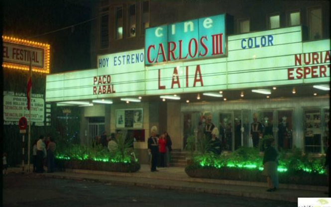

Nuestros cines cartageneros fueron, durante varias generaciones, una de las principales fuentes de entretenimiento y cultura. En sus inicios, cuando las primeras proyecciones llegaron a la ciudad, muchos cartageneros probablemente pensaban que el cine era solo una moda pasajera, algo extraño que solo interesaba a un puñado de visionarios. Pero, poco a poco, el cine se consolidó como una de las grandes revoluciones de la época, y transformó por completo la manera en que veíamos el mundo.
Imaginemos por un momento aquellos primeros años. Cuando el cinematógrafo comenzó a proyectarse en Cartagena, era difícil concebir el impacto que tendría en la vida de las personas. Nuestros antepasados, sin duda, jamás habrían imaginado que, a través de una pantalla, podríamos viajar por lugares lejanos, admirar monumentos de otros países y descubrir maravillas naturales que parecían inalcanzables. El cine trajo consigo un universo nuevo, un espacio en el que, sin movernos del lugar, podíamos conocer el mundo entero. Y no solo el mundo físico, sino también el mundo de la imaginación, de los sueños y de las emociones.
Fue gracias a esta nueva invención que descubrimos que el mundo, a pesar de su vastedad, no era tan grande como creíamos. En los primeros años, el cine permitió a los cartageneros adentrarse en otros mundos, ver otros horizontes, y comprender, en cierto modo, lo pequeños que somos. El cine, en su esencia, nos hizo más conscientes de nuestra condición humana y nos enseñó que todos estamos embarcados en el mismo barco, en este mundo compartido del que nadie puede escapar. Con el paso de los años, lo que comenzó como una moda casi marginal se fue convirtiendo en una necesidad para la ciudad, en un espacio cultural indispensable para la vida cotidiana de los cartageneros.
El invento del cine, inicialmente conocido como "cinematógrafo", fue revolucionario. Sin embargo, su nombre largo y algo complicado hizo que, con el tiempo, se adoptara el término "cine", una palabra más accesible y familiar que se instauró en el lenguaje de todos. Fue en Cartagena donde el cine comenzó a expandirse de forma notable, y uno de los primeros lugares en los que se proyectaron películas fue en la calle Honda, con el "Cine de los Hermanos García", una de las primeras salas de proyección que, junto con el "Brillante" en la calle Gisbert, marcó el inicio de la historia cinematográfica de la ciudad.
La llegada del cine trajo consigo una serie de transformaciones. El cinematógrafo fue perfeccionado con el tiempo, y las primeras salas, como el "Cine de los Hermanos García" y el "Brillante", dieron paso a otras más modernas y cómodas. Con el paso de los años, Cartagena vivió la eclosión de nuevos cines, que se esparcieron por todos los barrios, convirtiéndose en parte del día a día de sus habitantes. Durante muchos años, la ciudad contó con cines emblemáticos que dejaron una huella profunda en la memoria colectiva de sus habitantes.
El cine Sport, en la plaza de la Merced, fue uno de los más populares de la ciudad. Más tarde, pasó a llamarse "Central", pero su esencia se mantuvo intacta. Allí, los cartageneros acudían a ver sus películas favoritas, especialmente los jueves por la tarde, cuando los niños no tenían clase y se reunían para disfrutar de las películas del oeste. Era un evento que reunía a toda la familia, pero lo que realmente quedaba grabado en la memoria era la atmósfera que se vivía en la sala. La emoción de los más pequeños, que gritaban y aplaudían al ver al sheriff salvar el día, era algo único. El cine Sport se convirtió en un lugar de encuentro, de emociones compartidas, donde los cartageneros se sentían como una comunidad unida por la magia del cine.
A las afueras del cine, los carrillos vendían todo tipo de golosinas: avellanas, torraos, chufas, castañas asadas, habas fritas con sal… Los sabores y olores se mezclaban con la emoción de la película, creando una experiencia sensorial que trascendía lo visual. La tradición de disfrutar de un buen "pico" mientras se veía una película fue, sin duda, una de las costumbres que marcó la relación de los cartageneros con el cine en esa época.
Pero la historia del cine en Cartagena no se limitó solo al centro de la ciudad. A medida que el cine se fue popularizando, nuevas salas aparecieron en los diferentes barrios y pedanías. En Los Molinos, por ejemplo, estaban el Ideal y el Peral; en los Dolores, el Máiquez y el Continental; en San Antón, el Avenida y el Central; en el Barrio de la Concepción, el Inma; y en Santa Lucía, el Coliseum, en la placeta del mismo nombre. Los barrios más alejados de la ciudad también se llenaron de salas de cine, convirtiéndose en centros de socialización y cultura para sus habitantes.
Dentro del casco urbano de Cartagena, también surgieron otras salas de cine, como el Carlos III, el Principal, la Sala Azul, el Alfonso XIII, el Mariola y el Máiquez. Cada una de estas salas tenía su propio carácter y su propia historia. Algunas eran grandes y elegantes, con cortinas pesadas y decoraciones cuidadas, mientras que otras eran más modestas, pero igual de acogedoras. Con el tiempo, el cine comenzó a modernizarse, y las golosinas tradicionales, como las avellanas y los torraos, fueron reemplazadas por los clásicos chicles y palomitas, que hoy siguen siendo inseparables del cine.
Sin embargo, lo que comenzó como una forma de entretenimiento en pequeños cines del centro y los barrios de Cartagena, hoy ha desaparecido en gran parte. Las grandes cadenas de cine han ido sustituyendo a esos cines de barrio, que fueron parte fundamental de la identidad cultural de la ciudad. Hoy en día, cuando paseamos por el casco antiguo o por algunos barrios periféricos, ya no encontramos esas salas llenas de historia y recuerdos, esos lugares donde generaciones enteras crecieron viendo cine. Y, sin embargo, el cine sigue siendo una de las grandes pasiones de los cartageneros, aunque en un formato diferente.
El paso del tiempo, los avances tecnológicos y las nuevas formas de ocio han cambiado la manera en que consumimos el cine. Pero, como bien decía aquel sabio: "Hoy las ciencias adelantan, que es una barbaridad". Lo que ayer parecía un sueño lejano, hoy es una realidad al alcance de todos. Sin embargo, no podemos olvidar los cines de antaño, esos que nos dieron la oportunidad de soñar, de viajar y de conocer el mundo sin salir de nuestra ciudad. Esos cines son parte de nuestra historia, y siempre lo serán.
Historias y Leyendas de Cartagena; para Objetibum Noticias.